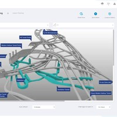
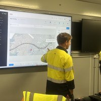
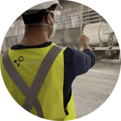
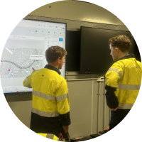
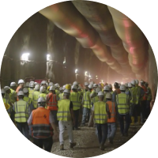
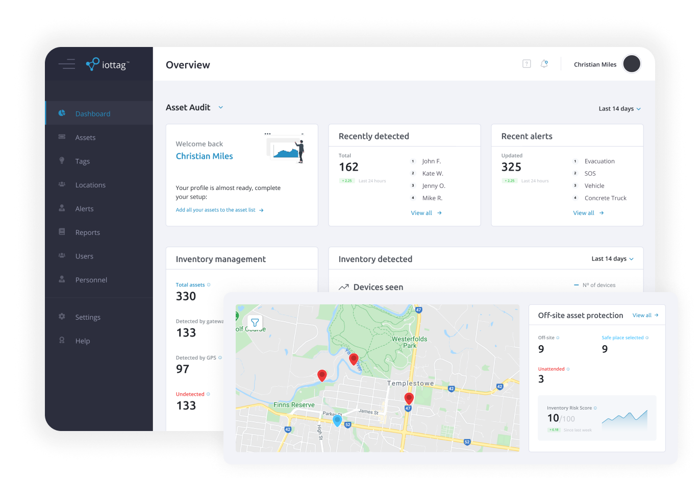
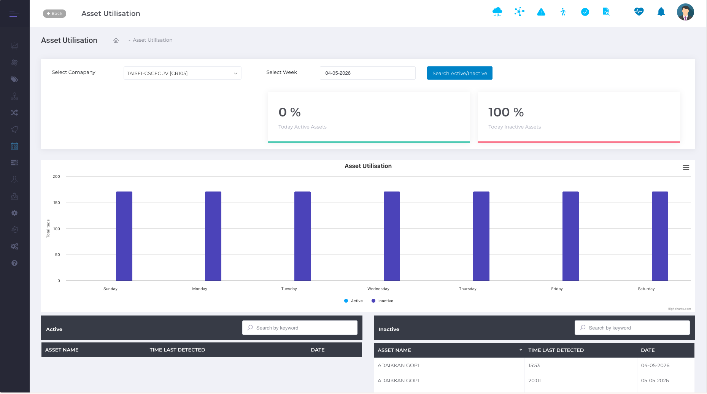
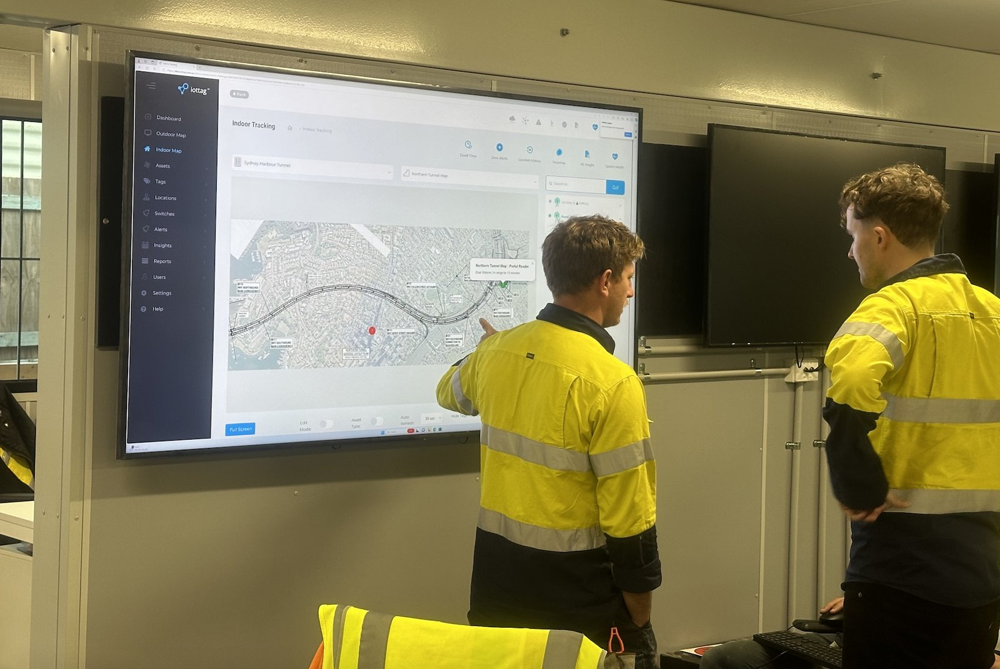

Operational Analytics & Benchmarking
Turning Operational Data Into Better Decisions
Visibility is only the starting point.
The greatest value comes from understanding performance trends, identifying emerging issues and comparing outcomes across projects, sites and contractors.
Operational Analytics & Benchmarking provides leadership teams with the insight required to improve safety, operational performance and governance across the entire organisation.
From Operational Visibility To Executive Insight
Operational teams require real-time information to manage daily activities.
Leadership teams require a broader perspective.
They need to understand:
How sites are performing.
How sites are performing.
How contractors compare.
Which risks are emerging.
Where operational trends are changing.
Where intervention may be required.
Operational Analytics transforms operational data into meaningful insight that supports better decision-making at every level of the organisation.
Operational Analytics transforms operational data into meaningful insight
that supports better decision-making at every level of the organisation.
Designed For
Multi-Site Operations
As organisations grow, operational complexity increases.
- Multiple sites.
- Multiple contractors.
- Multiple operational environments.
- Different risk profiles.
- Different performance outcomes.
Operational Analytics provides a consistent framework for measuring, comparing and understanding performance across the organisation.
A single site view helps manage operations.
A portfolio view helps improve them.
Benchmarking Across Projects, Sites And Contractors
Performance improvement begins with understanding.
Operational Analytics enables organisations to benchmark outcomes across:
Sites
Compare performance across multiple operations.
Contractors
Identify leading and lagging performance indicators.
Projects
Understand trends across different project environments.

Regions
Monitor performance across geographic locations.

Time Periods
Measure improvement over time.
Executive Visibility Across The Operational Hierarchy
Different stakeholders require different perspectives. Operational Analytics provides visibility at every level.
Mining
Contractor
Site Management
Corporate Leadership
Tunnelling Structure

Subcontractors

Main Contractor / Joint Venture
Asset Owner
Critical Infrastructure

Operations Teams
Facility Management
Executive Stakeholders
A shared operational understanding supports better decisions throughout the organisation.
Safety Performance & Risk Visibility
Operational Analytics provides visibility into:
This helps leadership teams move beyond lag indicators and gain a clearer understanding of emerging operational conditions.

Production Performance & Operational Efficiency
Operational Analytics supports a broader understanding of operational performance.
Monitor:
By understanding these relationships, organisations can identify opportunities for continuous improvement.

Supporting Owners, Operators And Stakeholders
Operational Analytics provides confidence that operations are performing as expected.
Mining Structure
Asset Owners
Gain visibility into project performance and operational outcomes.
Operators
Monitor day-to-day operational performance.
Executive Leadership
Support strategic planning and decision-making.
Government Stakeholders
Improve transparency, reporting and oversight.
Better visibility supports better governance.
Turning Information Into Continuous Improvement
The goal of Operational Analytics is not reporting. The goal is improvement.
By combining operational information, performance trends and benchmarking data into a single framework, organisations gain the insight required to:
- Identify improvement opportunities.
- Reduce operational blind spots.
- Improve accountability.
- Enhance governance.
- Support better decisions.
- Drive continuous operational improvement.
Part Of The Operational Intelligence Ecosystem
Operational Analytics builds upon information from across the broader iottag ecosystem.

Operational Digital Twin
Provides operational visibility.
Fatal Risk Intelligence
Provides risk visibility.
Production Intelligence
Provides production visibility.
Operational Analytics
Provides executive insight.
Improve Decisions Through
Better Operational Insight
Operational Analytics & Benchmarking helps organisations transform operational data into meaningful insight, supporting safer operations, improved performance and stronger governance across every level of the organisation.